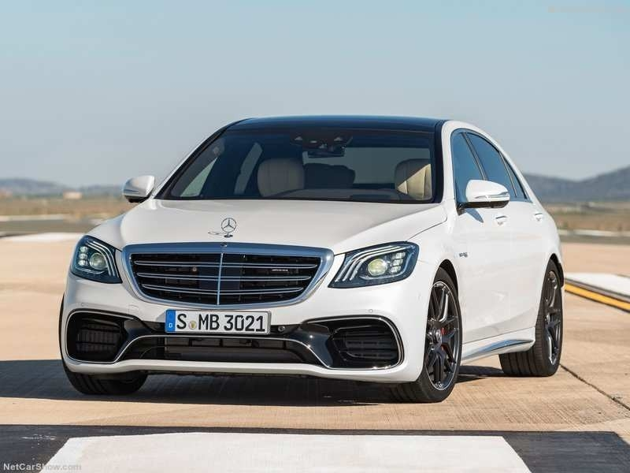

5/5 - Mercedes-Benz S-класа

2010-те бяха страхотно десетилетие за флагманския супер-луксозен седан на Mercedes. Той не само получи стилен вариант на купе, но вече може да се похвали и с хибридна опция.
През последните десет години S-класата е неоспорима по отношение на количеството лукс, производителност и функции, които предлага в своя сегмент.
Всъщност, с всички опции, началната цена от $91 000 може лесно да се изкачи до над $250 000, конкурирайки се директно с най-добрите лимузини като Bentley Flying Spur или Rolls-Royce Phantom.
S-класата не само е една от най-комфортните коли в света, но и разполага с до 621 конски сили под капака, благодарение на нетърпелив V12.
В момента той бие както BMW, Audi, така и Porsche по отношение на това, което предлага за цената.